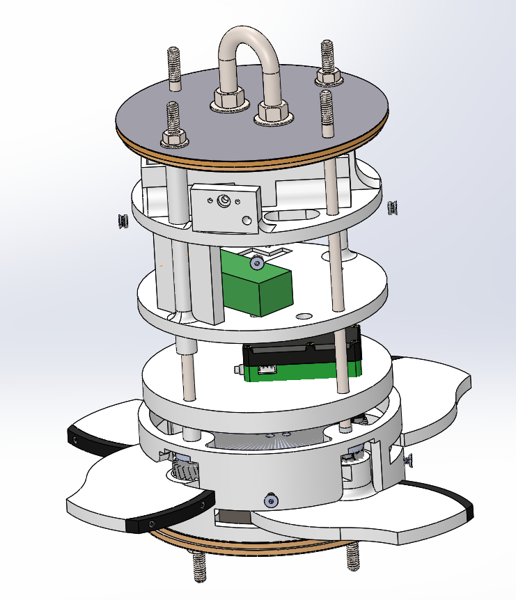
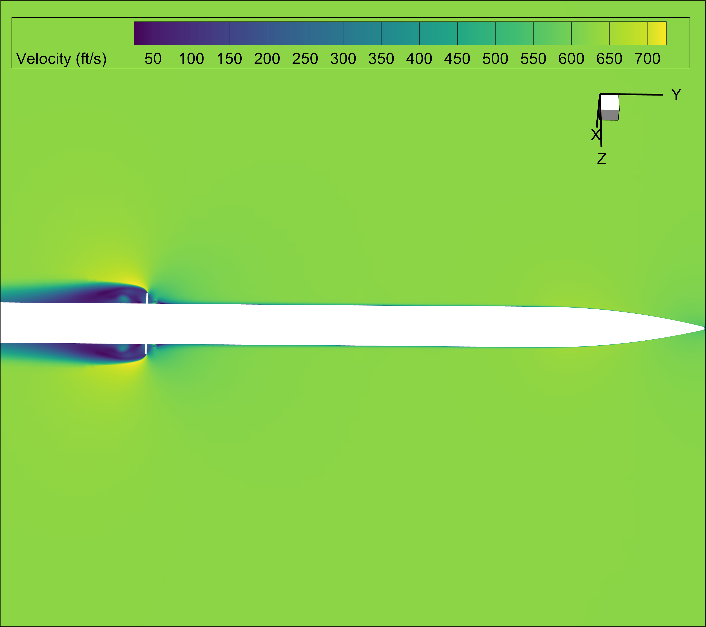
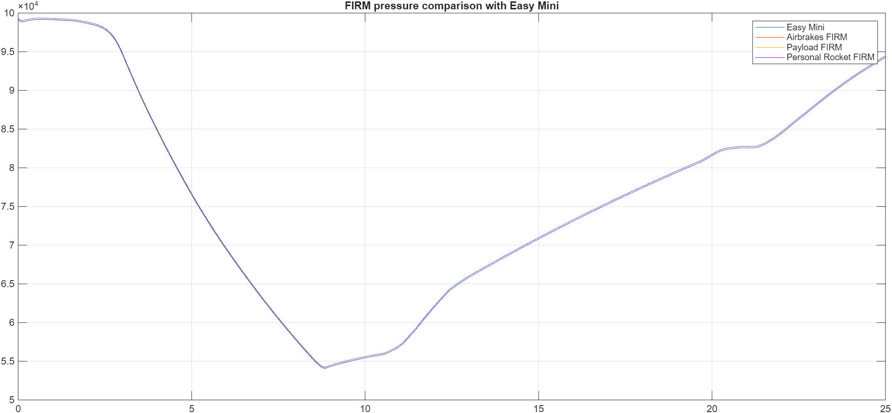

RK4 Apogee Prediction
A fourth-order Runge-Kutta model propagated the current flight state to estimate peak altitude during coast.
A flight-tested system that deployed four aerodynamic fins during coast, predicted apogee from the current vehicle state, and adjusted drag to reduce altitude error.
The module combined four synchronized fins, geared servo actuation, onboard processing, inertial sensing, pressure measurement, and a removable structural stack packaged inside the rocket.

Exploded assembly showing the drag surfaces, actuation mechanism, Raspberry Pi flight computer, custom INS, and structural interfaces.
A fourth-order Runge-Kutta model propagated the current flight state to estimate peak altitude during coast.
The controller deployed or retracted based on whether the predicted trajectory would overshoot the target.
A custom INS supplied acceleration, orientation, magnetic, and barometric data to the finite-state machine.
A 6.14 lb-ft servo with an integrated encoder drove all four fins through a synchronized geared mechanism.
The fins deployed 0.25 seconds after motor burnout and reduced predicted apogee by 273 feet.
Full-scale testing demonstrated successful deployment and an estimated 293-foot reduction in peak altitude.
Real flight footage showing the airbrake system in its operating environment.
Ground test demonstrating rapid and repeatable deployment response.

CFD visualized separated flow and wake development around the deployed fins, supporting the expected drag increase.

Flight telemetry showed noisier pressure near the deployed airbrakes than at the nose, demonstrating why sensor placement matters near active surfaces.
The competition vehicle finished six feet above its declared apogee. The controller kept the airbrakes stowed because the predicted trajectory did not require additional drag—showing that the system could make a correct no-deployment decision rather than simply actuating on a fixed timer.
My work with the aerodynamics subteam included supporting the mechanical design, integration, fabrication, testing, and post-flight evaluation of the airbrake system.